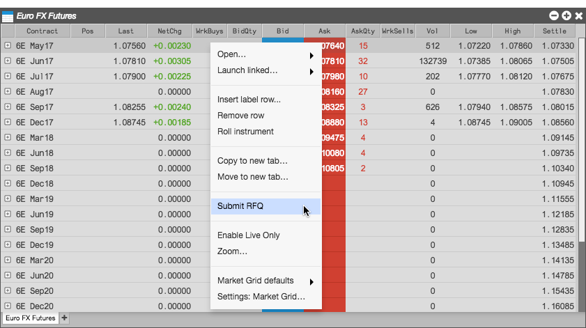

For exchanges and products that support request for quote (RFQ) functionality, you can right-click the contract name in the Market Grid to submit an RFQ. Instruments that have submitted RFQs can be displayed in the RFQ Viewer. Currently, TT supports RFQ functionality for CME.
To submit an RFQ:
